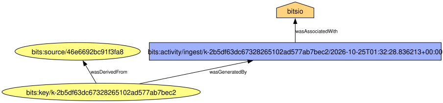

Inspect lineage and export provenance
This page contains unreviewed content created with large language model (LLM) tools.
Continue in the same Python session and inspect the lineage generated by the workspace write. Then export the same information using the W3C PROV data model.
1 Read the lineage
Every stored-array write appends an event to a lineage journal. The lineage table presents the current state obtained by folding those events, with one row per stored array:
table = exp.lineage_table()
(row,) = table.filter(table["target_path"] == target).to_dicts()
print(row["lineage"], row["realization"], row["lossy"], row["contract_level"], row["source_tree"])
key = row["store_key"]
lineage = exp.lineage(key)
print(lineage.lossy, lineage.contract_level)
print([entry.kind.value for entry in exp.history(key).entries])root stored True lossy overlay
True lossy
['ingest']The row reports a stored, lossy array written to an overlay. lineage() returns the typed report for one store key, while history() returns all journal entries associated with that key.
BIDS GeneratedBy records dataset-level provenance. BITS additionally tracks events for individual stored arrays. The two mechanisms are complementary.
2 Export provenance
Map the selected array’s lineage to a W3C PROV document:
from pathlib import Path
doc = exp.prov(keys=[key], agent="bitsio")
print(sorted(doc.to_json()))
print(doc.to_provn())
Path("lineage.dot").write_text(doc.to_dot())['activity', 'agent', 'entity', 'prefix', 'wasAssociatedWith', 'wasDerivedFrom', 'wasGeneratedBy']
document
prefix bits <urn:bits:>
prefix p-plan <http://purl.org/net/p-plan#>
entity(bits:key/k-2b5df63dc67328265102ad577ab7bec2, [bits:content_hash="blake3:1210ae7e81926f4171849ae6dade1b773624b82ac7b281f900c598a6e9f79478", bits:contract_level="lossy", bits:lineage="root", bits:lossy="true", bits:realization="stored", bits:subject="01"])
entity(bits:source/46e6692bc91f3fa8, [bits:source_ref="sub-01/ses-test/func/sub-01_ses-test_task-fingerfootlips_bold.nii", prov:type='prov:PrimarySource'])
activity(bits:activity/ingest/k-2b5df63dc67328265102ad577ab7bec2/2026-10-25T01:32:28.836213+00:00, -, 2026-10-25T01:32:28.836213+00:00, [prov:type='bits:ingest'])
agent(bits:agent/bitsio, [prov:label="bitsio", prov:type='prov:SoftwareAgent'])
wasAssociatedWith(bits:activity/ingest/k-2b5df63dc67328265102ad577ab7bec2/2026-10-25T01:32:28.836213+00:00, bits:agent/bitsio)
wasDerivedFrom(bits:key/k-2b5df63dc67328265102ad577ab7bec2, bits:source/46e6692bc91f3fa8, bits:activity/ingest/k-2b5df63dc67328265102ad577ab7bec2/2026-10-25T01:32:28.836213+00:00, [prov:type='prov:PrimarySource'])
wasGeneratedBy(bits:key/k-2b5df63dc67328265102ad577ab7bec2, bits:activity/ingest/k-2b5df63dc67328265102ad577ab7bec2/2026-10-25T01:32:28.836213+00:00, 2026-10-25T01:32:28.836213+00:00)
endDocumentThe PROV entity represents the stored array and includes its content hash and loss status. The ingest journal event becomes an activity, the source BOLD path becomes a source entity, and the supplied agent identifies the software. Render the generated DOT graph with Graphviz:
dot -Tsvg lineage.dot -o lineage.svg